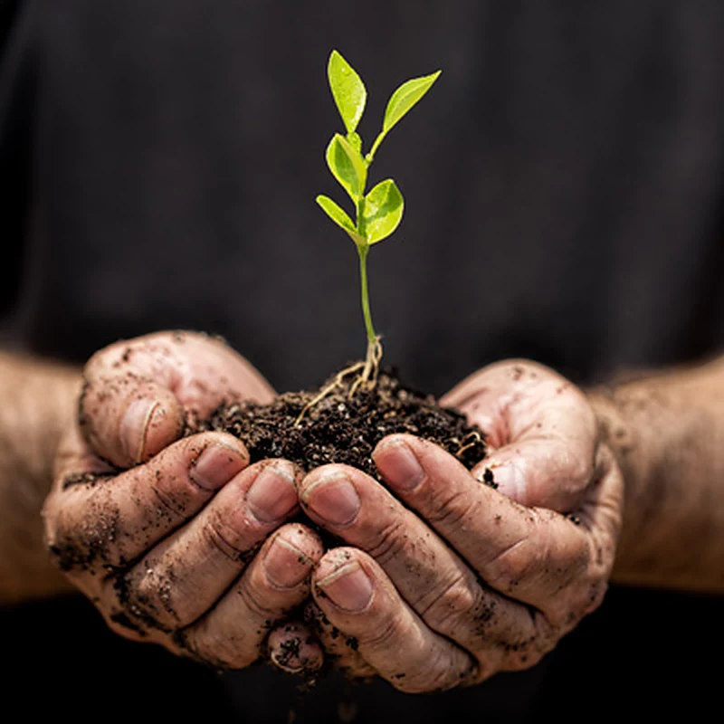
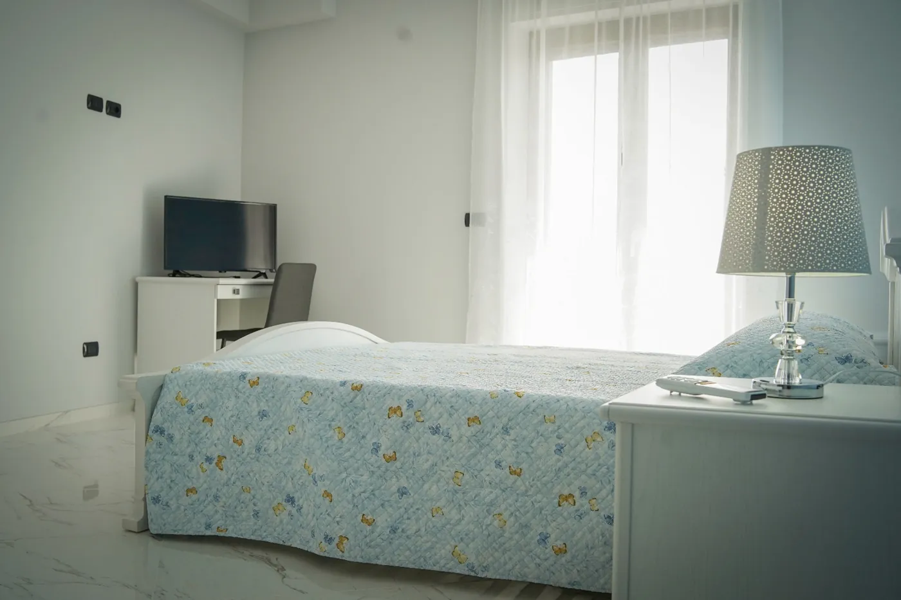
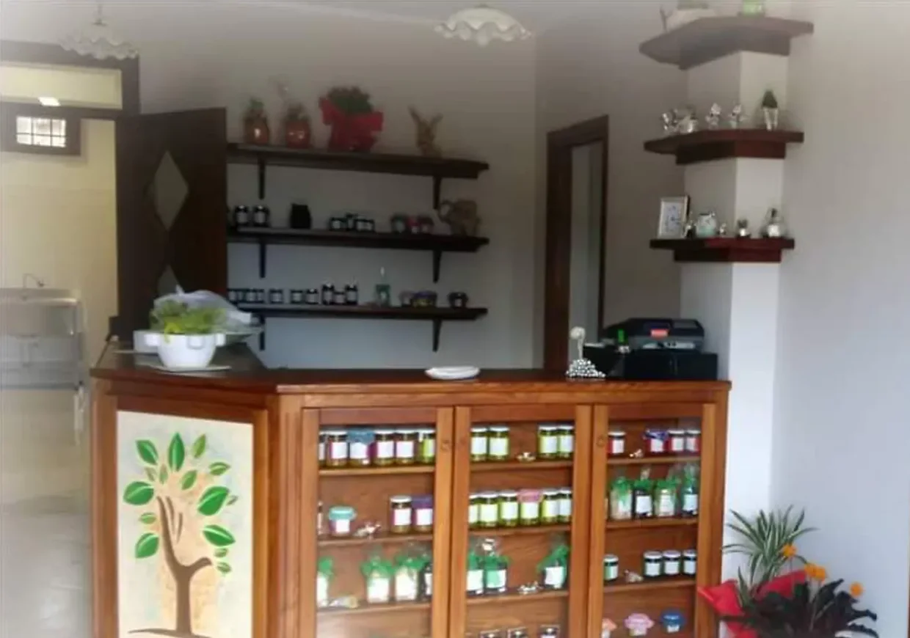
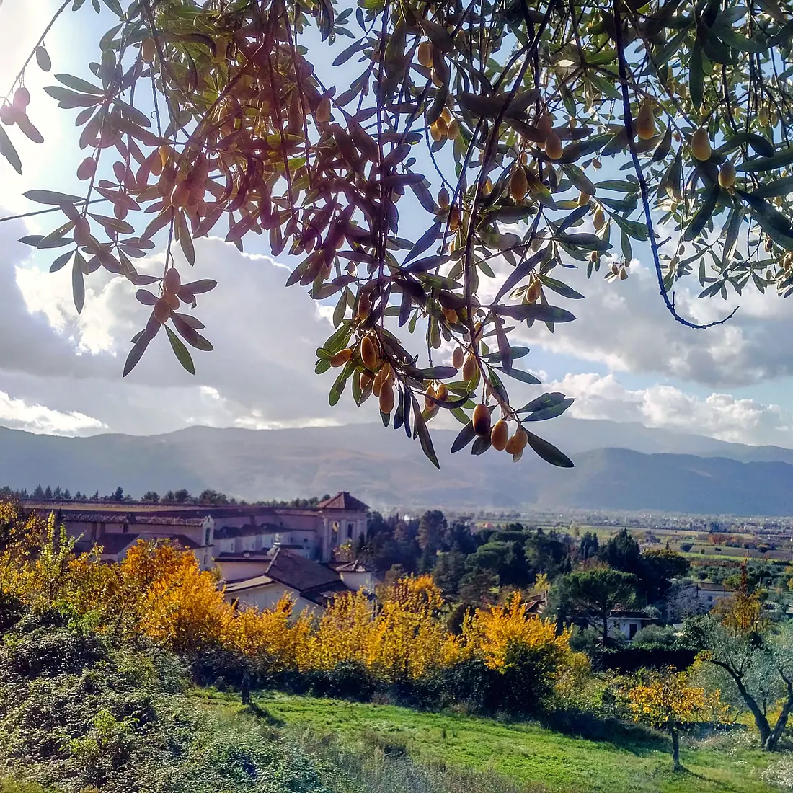

Un'azienda agricola sul viale della Certosa
Gemma coltiva la terra di famiglia, ne fa composte e conserve nel laboratorio al piano terra e, al piano di sopra, ospita chi viene a vedere la Certosa di San Lorenzo.

Puoi dormire qui, comprare i nostri vasetti, cucinare con Gemma

Tre camere con bagno privato
Una familiare per quattro persone e due matrimoniali con il balcone sul viale. Colazione inclusa, parcheggio gratuito a due passi.
Vedi le camere e prenota
Composte e conserve dell'orto
Fichi, noci verdi, peperoncini, melanzane sott'olio: quattordici vasetti fatti qui, senza conservanti. Si comprano online o in azienda.
Vai alla bottega
Laboratori di pasta e polpette
Qualche ora in cucina con Gemma, poi si assaggia nella saletta in pietra. Aperti anche a chi non dorme da noi.
Scopri i laboratori
La casa dei nonni, di nuovo abitata
Qui c'erano la casa e la stalla dei nonni paterni di Gemma. Poi ci hanno vissuto i suoi genitori, ed è qui che lei è cresciuta.
Dopo gli anni a Napoli, Gemma è tornata. Nel 2011 ha ripreso a coltivare la terra di famiglia, nel 2016 ha aperto il laboratorio, nel 2021 ha sistemato le camere al piano di sopra. Frutta e ortaggi fanno pochi metri dal campo al paiolo, e lo spaccio è al piano terra, accanto al laboratorio.
Demetra, per i Greci, era la dea del grano e dei raccolti.

Davanti a casa comincia il viale dei monaci
È il viale che dal monumento a San Bruno porta alla Certosa di San Lorenzo, patrimonio UNESCO. Dalle camere ci si arriva a piedi.
Alcuni dei nostri vasetti
Si comprano online su Italiatipici, con pagamento sicuro e consegna a casa, oppure nello spaccio in azienda.